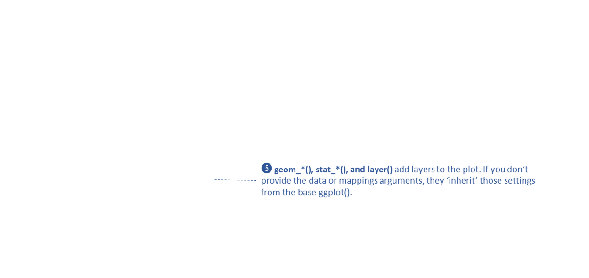
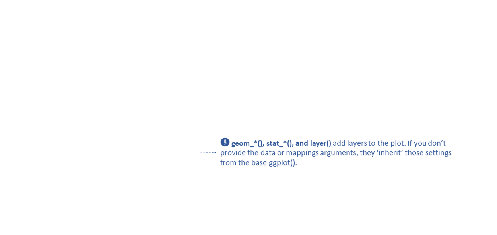

Spatial Data Analysis
with R
BayGeo, Spring
2024
Data Wrangling II and Plotting with ggplot

Data Wrangling II and Plotting with ggplot

Load Palmer Penguins data frame:
## # A tibble: 6 × 8
## species island bill_length_mm bill_depth_mm flipper_length_mm body_mass_g sex year
## <fct> <fct> <dbl> <dbl> <int> <int> <fct> <int>
## 1 Adelie Torgersen 39.1 18.7 181 3750 male 2007
## 2 Adelie Torgersen 39.5 17.4 186 3800 female 2007
## 3 Adelie Torgersen 40.3 18 195 3250 female 2007
## 4 Adelie Torgersen NA NA NA NA <NA> 2007
## 5 Adelie Torgersen 36.7 19.3 193 3450 female 2007
## 6 Adelie Torgersen 39.3 20.6 190 3650 male 2007
Use ggplot to make a scatter plot:


 


geom_xxxx() functions add layers
drawn from the bottom up
some common geoms:
geom_point(col = pop_size)
geom_point(col = “red”)
visual properties are inherited (from
aes())
each geom has default color palettes and legend settings
In the example below, note where geom_boxplot() gets its
visual properties:
aes()ggplot(penguins, aes(x = species, y = bill_length_mm)) +
geom_boxplot(color = "navy", fill = "yellow", size = 1.5)## Warning: Removed 2 rows containing non-finite values (`stat_boxplot()`).
geom_xxxx() functions can also be used to add other
graphic elements:
ggplot(penguins, aes(x = species, y = bill_length_mm)) +
geom_boxplot(color = "navy", fill = "yellow", size = 1.5) +
geom_hline(yintercept = 43.9, size=3, color="red") +
geom_label(x = 3, y = 58, label = "Gentoo penguins \n are just the best!")## Warning: Using `size` aesthetic for lines was deprecated in ggplot2 3.4.0.
## ℹ Please use `linewidth` instead.
## This warning is displayed once every 8 hours.
## Call `lifecycle::last_lifecycle_warnings()` to see where this warning was generated.## Warning: Removed 2 rows containing non-finite values (`stat_boxplot()`).